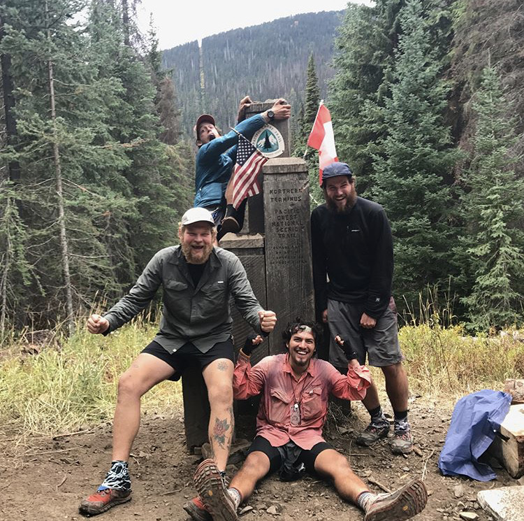
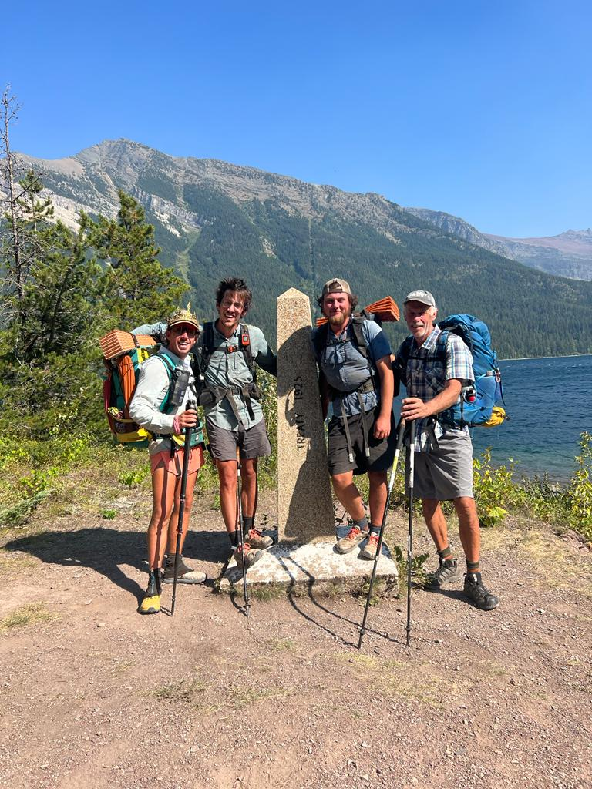

At the Northern Terminus of the PCT (the finish line)April to September 2017
The Pacific Crest Trail is a long-distance National Scenic Trail that goes from Mexico
to Canada through California, Oregon, and Washington. It is 2,650 miles in length and
takes an average of 3-6 months to complete. Over a 5 month period, I thru-hiked the
Pacific Crest Trail from April to September of 2017. It was one of the most fun
and most challenging experiences of my life.
Continental Divide Trail

At the Northern Terminus of the CDT.April to September of 2022
The Continental Divide Trail is another one of America's National Scenic Trails.
Like the PCT, it also goes border-to-border from Mexico to Canada through
New Mexico, Colorado, Wyoming, Idaho, and Montana. The CDT is roughly 3,000 miles
long and takes an average of 4-6 months to complete. Due to it's intense weather,
high elevation, and number of miles, it is often considered to be the hardest of
the main thru-hikes in the US. I completed it in 4 and a half months in 2022.